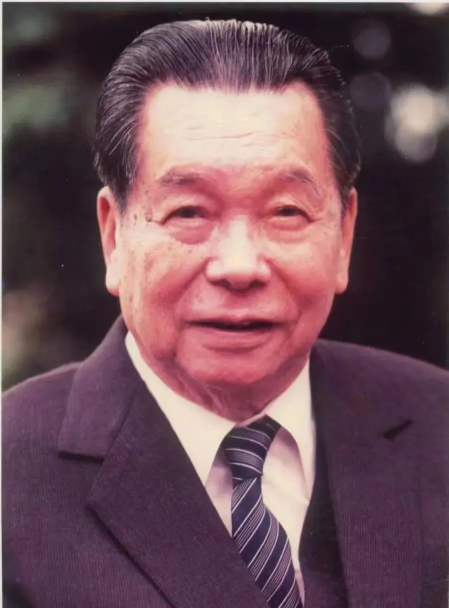

SYSU-RA-005 人物正文 / PROFILE
柯麟
1901 — 1991 · 广东海丰 · 广东公医大学 / 中山医学院
柯麟 1926 年毕业于广东公医大学，同年加入中国共产党。他以医生身份在隐蔽战线工作二十余年。解放后出任中山医学院院长兼党委书记，主持三校合并。
悬壶济世良医意，救国忧民志士心。马万祺 · 评柯麟

SYSU-RA-005 人物正文 / PROFILE
1901 — 1991 · 广东海丰 · 广东公医大学 / 中山医学院
柯麟 1926 年毕业于广东公医大学，同年加入中国共产党。他以医生身份在隐蔽战线工作二十余年。解放后出任中山医学院院长兼党委书记，主持三校合并。
悬壶济世良医意，救国忧民志士心。马万祺 · 评柯麟
1928 年柯麟转入中共隐蔽战线，辗转上海、香港。1935 年他受组织安排赴澳门，以医生身份担任镜湖医院院长。他义务服务镜湖慈善会长达 55 年，任院长 38 年，用医术取得各阶层的信任。
同一时期，他秘密完成党交办的任务，联络并照料叶挺，为叶挺从澳门奔赴抗日战场出任新四军军长作出贡献。上世纪 50 年代初，他又与何贤、马万祺合作，用三天把 2500 多箱航空器材和军用物资运回内地。
新中国成立初期，广东有中山大学医学院、岭南大学医学院和光华医学院，医学教育资源分散。1951 年，柯麟出任中山医学院院长兼党委书记。1953 年，他主持三校合并，组建华南医学院，后为中山医学院。
他立下“三基”“三严”的学风，汇聚梁伯强、陈心陶、陈耀真等八位国家一级教授，把中山医建成全国重点医科大学。改革开放后，80 岁的他再次出任中山医学院院长。2017 年，中山一院以他的名字命名“柯麟楼”。
柯麟原名柯辉萼，广东海丰人。人物资料采用镜湖慈善会档案的记载：1921 年他以海丰全县第一的成绩考入广东公医医科大学。1924 年经彭湃介绍加入中国共产主义青年团，1926 年转为中共党员，任学校首任党团支部书记。
在校期间，他参与领导收回“公医”、归并广东大学的运动。广东公医大学是今天中山大学中山医学院的前身。
生于广东海丰，原名柯辉萼。
毕业于广东公医大学，同年加入中国共产党。
赴澳门，以镜湖医院院长身份从事隐蔽工作。
主持三所医学院合并，组建华南医学院。
逝世。被称作“中山医一代宗师”。